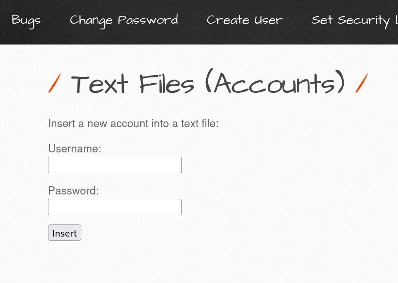
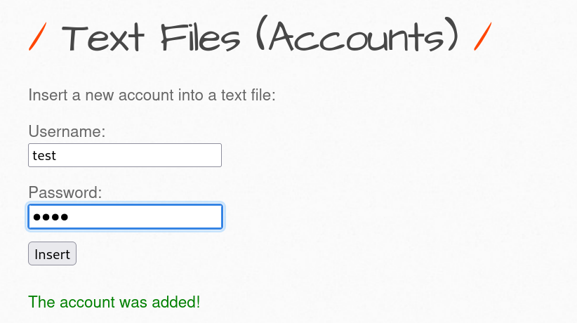
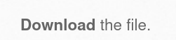
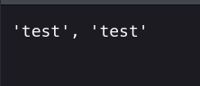
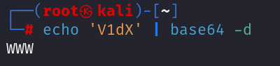
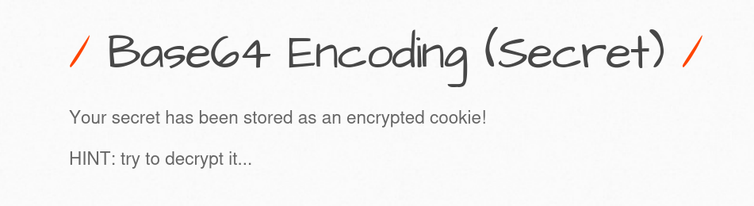
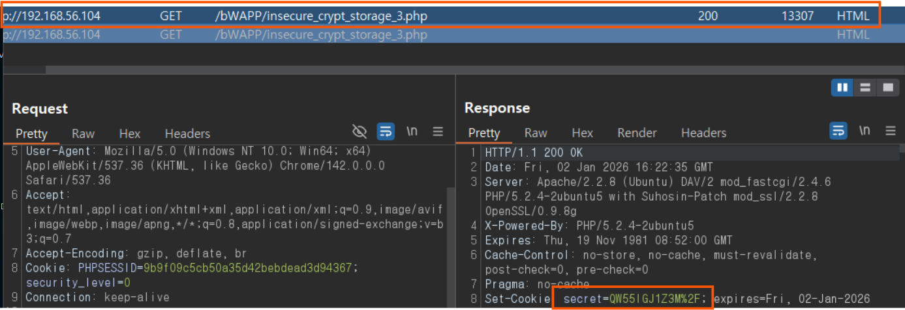
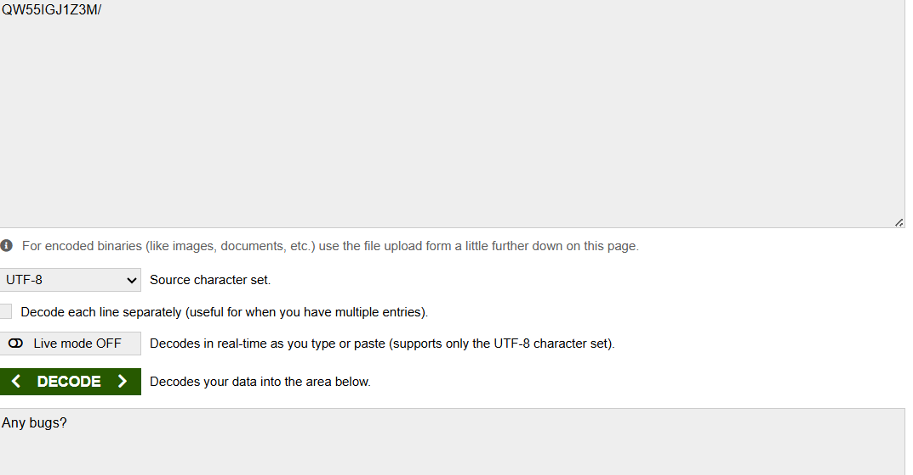

평문으로 된 패스워드 노출 실습
- 과거에는 회원가입 된 DB 정보가 평문으로 저장되는 경우가 많았음 (지금은 암호화시킴)
실습

회원 가입 페이지를 간단하게 구현해 놓은 것

필자는 test라는 명령어를 입력해서 회원가입을 저장시킴
밑에 저장된 문구가 출력

밑에 다운로드하는 기능이 있는데 (실무에서는 절대 없을 일이지만) 실습페이지기 때문에 저기 있는 다운로드를 클릭하게 되면

평문으로 ID, PW를 웹페이지에 나오는 것을 확인할 수 있음 더 심각한 건 암호화가 아니라 평문으로 저장되어 있다는 것 이는 공격자(해커) 추가적인 공격 정보를 주고 내부 침입이 가능합니다.
Base64 인코딩
- 개발자가 종종 실수하는 것은 Base64로 인코딩하면 안전하다고 생각합니다.
Base64 인코딩이란?
- 이진 (0,1) 데이터를 아스키 텍스트 문자열로 변환하는 방법을 말함
Ex) 전자우편, HTTP 메시지를 전송할 때 사용 됨.
예를 들면
www라는 문자가 있는데 이를 각각 8비트 토 구성된 3개의 바이트를 6비트씩 쪼개서 4개로 나누는 방식임
w의 아스키코드 값은 무엇일까요? https://w-key.tistory.com/8 참고 바랍니다
10진수로 구성된 w의 문구의 아스키 값은 87입니다
비트로 표현 시 01010111입니다.
인코딩, 디코딩 구분
| 구분 | 인코딩 (Encoding) | 디코딩 (Decoding) |
| 방향 | 정보 → 부호 (Code) | 부호 (Code) → 정보 |
| 의미 | 컴퓨터가 이해하거나 전송하기 쉬운 형태로 변환 | 우리가 원래 보려던 형태(문자, 영상 등)로 복원 |
| 비유 | 편지를 써서 봉투에 담고 주소를 적는 과정 | 도착한 봉투를 열어 편지 내용을 읽는 과정 |
리눅스 터미널은 base64 명령어를 사용해 인코딩, 디코딩을 할 수 있습니다.

디코딩 옵션을 주고 변환해 주는 모습
평문으로 표시되지 않아도 Base64 인코딩을 하여도, 쉽게 디코딩하여 그 원래 값을 알 수 있음
실습

내용: 시크릿이 암호화된 쿠키에 저장되어 있습니다. 힌트: 복호화를 시도해 보세요.
버프프락시를 이용할 것

여기 보면 응답값에 secret에 QW55IGJ1Z3M%2F 이것을 디코딩할 수 있는데
여기 인코딩/디코딩해 주는 사이트에서 변환시켜 보겠습니다.

Any bugs?로 문구 뜸 이런 식으로 인코딩을 해도 디코딩을 해버리면 평문과 같은 존재가 되기에 적절한 암호화를 해야 함.